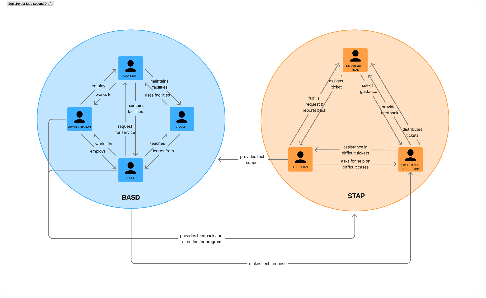
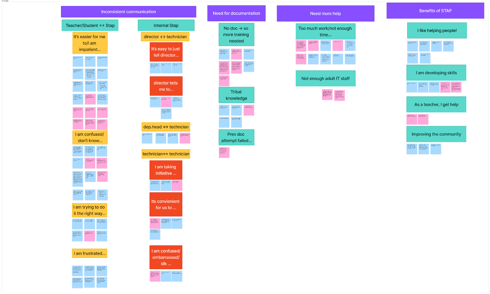
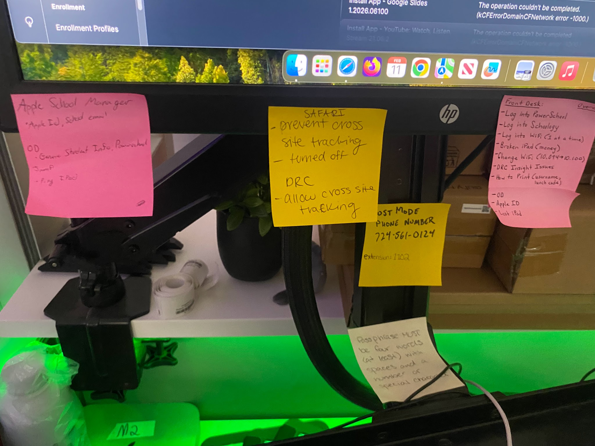
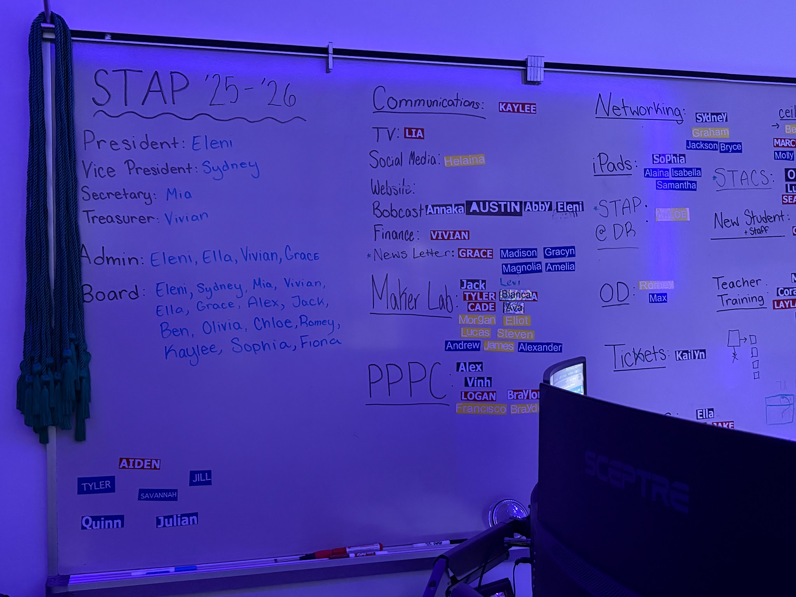
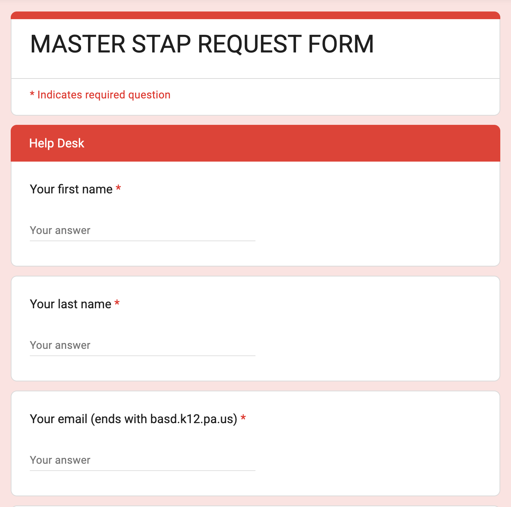
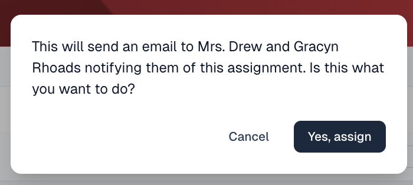
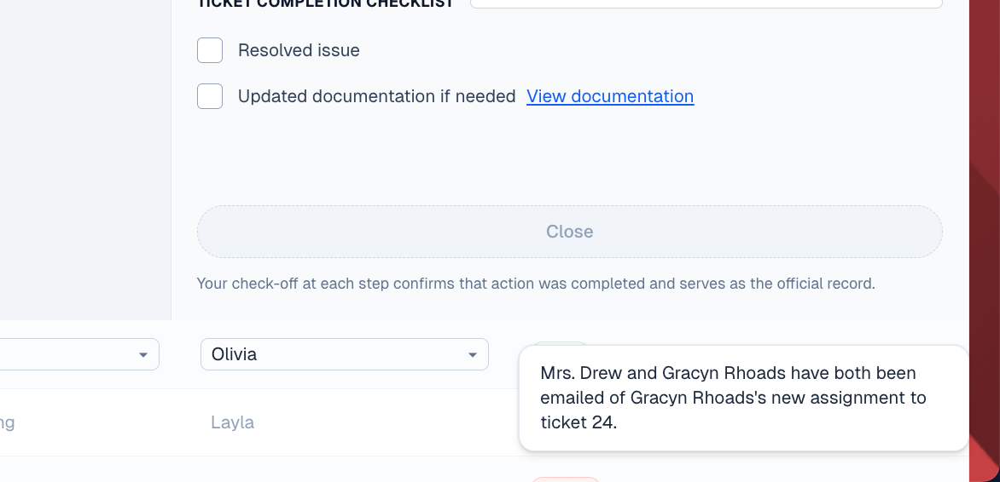
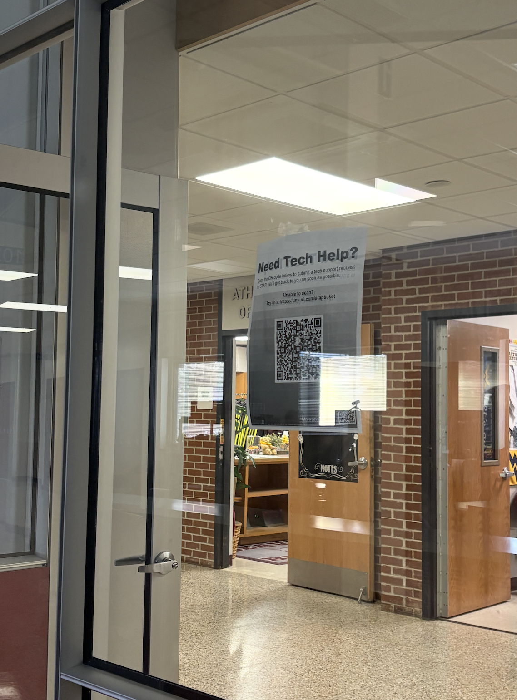

Student needs come first.
The system had to relieve internal friction before it could improve service outside STAP.

The client asked for a ticketing suite. Research showed that the harder problem was not the absence of software, but the absence of a shared practice.
We designed a lightweight workflow around tools the students already knew: a Google Form for requests, a custom Google Sheets interface for managing tickets, and a structured Google Drive for documenting solutions. Together, they turn each request into both a task to resolve now and knowledge the next student can inherit.
STAP—the Student Technology Assistive Program—helps support the entire Beaver Area School District. Freshmen through seniors work across more than ten departments, from iPads and networking to teacher training and front-desk support, with only two adult supervisors.
That structure gives students real responsibility. It also makes continuity difficult: members graduate, leadership changes, and new technicians have to learn a system that mostly lives in people’s heads.

We began by mapping how teachers ask for help, how requests reach students, how technicians divide work, and what happens after a problem is fixed. The official workflow looked simple. The lived workflow was spread across private group chats, direct messages, email, hallway conversations, spreadsheets, and memory.
Interviews with students and staff made one tension clear: the tools could not become another system to learn. They had to feel familiar enough to use immediately and structured enough to survive turnover.
The research artifacts revealed two parallel systems: an external path for teachers requesting help and an internal path for students assigning, resolving, and passing on that work. Neither path had one reliable source of truth.



The design brief expanded from tracking requests to supporting the students who would maintain the service.
The system had to relieve internal friction before it could improve service outside STAP.
Requests and updates scattered across channels created confusion and frustration.
When solutions stay as tribal knowledge, every graduating class takes part of the system with it.

A ticket suite could record requests, but it would not automatically teach new members what to do, make handoffs consistent, or preserve solutions after experienced students graduated.
We revised the goal: build a platform usable by high school students, integrate documentation into the act of closing a ticket, and create an organized workspace that students could manage themselves.
The design question became: how might a ticket system also serve as the program’s memory?
Instead of introducing a complex enterprise platform, we connected three tools already available in the district’s Google ecosystem.
A teacher scans a QR code, describes the problem, and submits a request from any device.
Students see new tickets, assign ownership, communicate progress, and close work through a guided checklist.
Reusable solutions and templates give current technicians a reference and future students a starting point.


Across paper sketches, a mid-fidelity prototype, and four dashboard iterations, the interface moved away from a conventional data table. Testing showed that students needed an immediate answer to one question: what is waiting for someone to take it?
We separated unassigned and assigned tickets, reduced hidden actions, and made the completion checklist part of each expanded ticket. The final hierarchy privileges action over analytics.


Assigning a technician prompts a confirmation and notifies both the requester and the student taking the work. Closing a ticket requires technicians to confirm that the issue is resolved and update documentation when needed. Progress is no longer a separate conversation that can disappear into a private chat.



The shared Drive mirrors STAP’s departments and provides a uniform home for instructions. Templates lower the effort of writing a new guide, while the completion checklist links documentation to the moment a technician already has the solution in mind.


The form entered live use through QR posters placed near the STAP office. Teachers could submit a request where the need occurred; student technicians received a structured ticket rather than another message to translate.


A sustainable service is not only one that handles today’s request. It is one that helps the next student know what to do.
Our biggest shift was learning to push back on the initial scope without abandoning it. The ticket interface remained essential, but its value came from the surrounding practice: centralized communication, visible ownership, and documentation built into completion.
The next work is organizational rather than cosmetic—establishing who maintains the workflow, deciding what information should remain confidential, and making the system durable as student leadership changes.